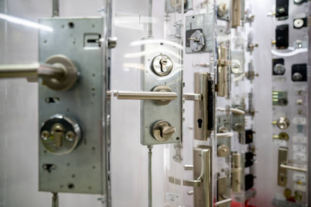

Need a locksmith in Succasunna New Jersey ? We offer expert lock repair, key replacement, and security upgrades. Available around the clock to ensure your safety and peace of mind.
Click Here To Call Us (877) 796 9523When it comes to reliable locksmith services in Succasunna New Jersey look no further than our expert team. We understand the importance of security and peace of mind, which is why we offer a comprehensive range of locksmith services to meet your needs. Whether you’re locked out of your home, car, or office, or need to upgrade your security system, our skilled locksmiths are here to help.
Our services include emergency lockout assistance, lock repairs, rekeying, key duplication, and high-security lock installations. We pride ourselves on providing fast and efficient service, ensuring that you’re never left waiting during an emergency. Our locksmiths are highly trained and equipped with the latest tools and technology to handle any lock and key challenge, no matter how complex.
At our company in Succasunna New Jersey customer satisfaction is our top priority. We work closely with each client to understand their specific needs and provide customized solutions that enhance their security. Whether you need a simple lock repair or a complete security system upgrade, we have the expertise to get the job done right.
Available 24/7, our locksmith services in Succasunna New Jersey are designed to be there when you need them most. Trust us to protect your home, business, and vehicle with our reliable and professional locksmith solutions.
Residential & commercial Lomo Locksmith
Quality services at affordable prices
Immediate 24/ 7 emergency services


When it comes to securing your home in Succasunna New Jersey choosing the right lock is crucial. At Lomo Locksmith, we understand the importance of protecting your family and belongings. That's why we offer a comprehensive range of home locks tailored to meet your security needs.
Deadbolt Locks are among the most popular choices for exterior doors. Known for their strength and durability, deadbolts provide a high level of security by requiring a key to open from the outside. Whether you opt for a single or double-cylinder deadbolt, these locks are a solid choice for enhancing your home's security.
Smart Locks are becoming increasingly popular for homeowners who value convenience and modern technology. These locks offer keyless entry, remote access, and integration with home automation systems. With features like fingerprint recognition and mobile app control, smart locks provide a blend of security and ease of use.
Mortise Locks offer a classic, time-tested design that combines aesthetics with security. These locks are often found on older homes but are still favored for their robust construction and resistance to tampering.
Knob and Lever Locks are commonly used for interior doors, providing a balance between functionality and security. While they may not be as secure as deadbolts, they are ideal for rooms where high security is not the primary concern.
At Lomo Locksmith, we are committed to helping you choose the right lock for every door in your home. Contact us today for expert advice and professional installation services across Succasunna New Jersey .
Residential & commercial Lomo Locksmith
Quality services at affordable prices
Immediate 24/ 7 emergency services
With the rise of smart technology, securing your home or business has never been more efficient. At Lomo Locksmith, we offer professional smart lock installation services . Our experts can help you choose the right smart lock that integrates seamlessly with your lifestyle while enhancing security. Whether it’s keyless entry, remote access, or monitoring features, we will install smart locks that improve your safety and convenience.

Locks are intricate mechanisms that may encounter wear and tear over time. At Lomo Locksmith, we understand the importance of maintaining the integrity of your locks, which is why we provide professional lock repair services in Succasunna New Jersey . Our expert locksmiths can diagnose and fix a wide range of lock issues, from broken keys to faulty mechanisms.
We pride ourselves on delivering prompt and effective solutions, restoring your locks to optimal working condition. Whether it’s a residential, commercial, or automotive lock, our team is equipped to handle the repair with precision. Don’t let malfunctioning locks compromise your security; turn to Lomo Locksmith for reliable lock repair services you can trust.

Every car owner knows that lock and key issues can arise at the most inconvenient times. Our automotive locksmith services are tailored to handle a wide range of car locksmith needs, including key replacements, ignition repairs, and emergency lockout assistance. Our skilled technicians are equipped with the latest tools and technologies to provide prompt and reliable solutions, ensuring you get back on the road without hassle.

The convenience of keyless entry systems is revolutionizing how we secure our properties. At Lomo Locksmith, we provide expert installation of keyless entry systems that offer ease of access without the need for traditional keys. Our technicians will help you choose the right system that best suits your needs, whether for residential or commercial properties. Enjoy the freedom and enhanced security of keyless technology with professional support from our team.

When it comes to modern car keys, programming is essential. Our key programming services are designed to provide you with the capability to program new or replacement keys with precision. Whether you need a transponder key, remote key, or smart key programmed, our experienced technicians have the expertise and tools needed to ensure flawless integration with your vehicle’s locking system. Trust us for reliable and efficient key programming services.
Protecting your property starts with secure locks, and our security lock services in Succasunna New Jersey focus on installing and maintaining top-quality locking systems. We provide a comprehensive range of security locks, including deadbolts, electronic locks, and high-security systems that deter intruders. Our skilled locksmiths will assess your security needs and recommend the best options to safeguard your home or business. Trust us to provide reliable security solutions that keep your property safe and give you peace of mind.

A broken key can disrupt your day significantly and compromise your security. Our broken key extraction service in Succasunna New Jersey specializes in safely removing broken keys from locks without causing damage. Our experienced locksmiths use specialized tools to extract broken pieces and can often make replacements on the spot, ensuring you regain access quickly. Don’t let a broken key ruin your plans; rely on our skilled team to provide swift and professional service, restoring your access and security in no time.

When you’re in need of locksmith services, the last thing you want is to search endlessly for a reliable provider. That’s where Lomo Locksmith comes into the picture. Our certified locksmiths are available to address all your security needs and its surrounding areas. Our local knowledge means that we can respond quickly, providing you with the assistance required with minimal wait time.
We offer a full suite of services, including residential, commercial, automotive, and emergency locksmith services. With our commitment to customer satisfaction and safety, we’re proud to be a trusted locksmith near you. Anytime you require locksmith assistance, don’t hesitate to reach out to Lomo Locksmith; we’re just around the corner.
Years Experience
Expert Technicians
Satisfied Clients
Compleate Projects
At Lomo Locksmith, we understand that security is paramount. That’s why we are committed to providing top-notch locksmith services across all cities in Succasunna New Jersey . Whether you’re dealing with an unexpected lockout, need to upgrade your home’s security, or require professional lock repair, our team is here to ensure you receive the best service available.
Our team of highly skilled and licensed locksmiths is available 24/7, ready to assist you with any emergency lockout situations. We pride ourselves on our rapid response times, ensuring that help arrives promptly when you need it most. Our technicians are equipped with state-of-the-art tools and have extensive training to handle all types of locks and security systems with precision and care.
We offer a comprehensive range of services, from emergency lockouts and key duplication to sophisticated security system installations. Our goal is to provide solutions that meet your specific needs while maintaining the highest standards of security and reliability. At Lomo Locksmith, customer satisfaction is our top priority. We strive to deliver professional and courteous service every time, ensuring you feel secure and valued.
Additionally, our competitive pricing and transparent quotes mean there are no hidden fees—just honest, straightforward service. Choose Lomo Locksmith for unparalleled expertise, prompt service, and a commitment to your security in Succasunna New Jersey . Contact us today to experience the difference our professional locksmith services can make.
When you're locked out of your home or car during the late hours, the last thing you want is to wait around for help. That's where our emergency locksmith services shine. Available around the clock, our professional locksmiths in Succasunna New Jersey specialize in rapid response to any lockout situation. We are committed to offering prompt, reliable solutions that can bring peace of mind in the most stressful situations. With state-of-the-art tools and a team well versed in the latest locking technologies, we ensure that you regain access quickly and efficiently. Choose us for our dedication to customer satisfaction and our affordable rates that don’t compromise quality.
Finding a locksmith who works around the clock can be a challenging task. At Lomo Locksmith, we offer 24-hour locksmith services in Succasunna New Jersey and the surrounding areas, ensuring that you have access to locksmith assistance whenever you need it. Whether it's the early hours of the morning or late at night, our team is dedicated to providing you with fast and reliable solutions to your locking needs.
Our highly trained locksmiths are equipped with the right tools and knowledge to address any issue, from lock installations to emergency lockouts. You can count on us for anything from routine lock maintenance to complex security system installations. When searching for a 24-hour locksmith near me, look no further than Lomo Locksmith. We are committed to providing our customers with unbeatable service and affordable pricing.
As a preferred local locksmith we understand the unique security needs of our community from local businesses to residential properties. Our local expertise allows us to address common security issues promptly and efficiently. Whether you need a lock repair, installation, or emergency service, we offer a tailored approach to meet your specific needs. Our reputation is built on trust, reliability, and an unwavering commitment to keeping our neighbors secure.
High prices for locksmith services can often deter people from seeking help when they need it most. Our affordable locksmith solutions ensure that everyone has access to professional and reliable services without breaking the bank. We believe that quality service should be accessible, and we provide transparent pricing with no hidden fees. Trust our skilled team to deliver exceptional service while keeping your budget in mind.
Your home is your sanctuary, and keeping it secure is paramount. That's why our locksmith for home services specialize in residential security solutions that cater to your family's unique needs. From lock installations and upgrades to rekeying services and emergency lockout assistance, we are dedicated to providing comprehensive home locksmith services. Let us help you protect your home with high-quality, reliable, and professional locksmith solutions tailored just for you.
Finding yourself locked out of your car can be a frustrating experience, especially when you're in a hurry. Our car locksmith services are designed to get you back on the road quickly and efficiently. Whether you've lost your keys, need a key duplication, or require an ignition repair, our highly trained automotive locksmiths are here to help. We utilize advanced technology to provide key programming and keyless entry solutions that accommodate a wide range of vehicle makes and models. Trust our team to deliver fast, friendly, and reliable services whenever you're in a pinch.
Protecting your home should never be taken lightly. Our comprehensive residential locksmith services offer a range of solutions tailored to your specific needs, including lock installations, repairs, rekeying, and emergency lockout assistance. We prioritize your security and peace of mind by utilizing the latest technology and practices in the locksmith industry. With a team of certified professionals, we ensure that your home remains safe and secure at all times.
Business security is critical in safeguarding your assets and information. Our commercial locksmith services are tailored for business owners who need reliable, efficient, and effective security solutions. From installing high-security locks to providing master key systems and access control solutions, we work closely with you to design a comprehensive security plan that meets your business needs. Trust us to enhance your workplace security with professional and customized locksmith services.
Ensuring that your office is secure is paramount for the safety of your employees and valuable assets. At Lomo Locksmith, we offer specialized locksmith services for offices . From lock installations to security audits and emergency lockout services, our team ensures that your office remains safe and secure. We work with a variety of businesses, tailoring our services to meet the unique demands of your workplace. Partner with us to enhance your office security today.
In urgent situations when you need a locksmith, our mobile locksmith service in Succasunna New Jersey is just a call away. We bring our expertise directly to your location, regardless of whether you are at home, work, or stranded on the road. Our mobile team is equipped with everything needed to handle a variety of locksmith services, from lockouts to repairs, all on-site. With a strong focus on customer satisfaction, we guarantee fast and efficient service.
If you’ve recently moved into a new property or lost a key, rekeying your locks is a smart and cost-effective way to enhance security. Our rekey locks services in Succasunna New Jersey are designed to provide you with peace of mind without the expense of completely changing your locks. Our skilled locksmiths will adjust the pins of your existing locks to work with new keys, making any old keys obsolete. This service is particularly important after moving, as it prevents unauthorized access to your new home. Opt for our rekeying services to increase your security efficiently and affordably.
Ensuring that your doors are equipped with high-quality locks is essential for your property's security. Our lock installation services in Succasunna New Jersey cover a wide range of lock types, including deadbolts, knob locks, and smart locks. Our expert locksmiths are trained to install locks that enhance your security while also fitting seamlessly with your property’s design. Whether you're looking to improve security at home or your business, we guarantee professional installation that meets your needs effectively. Trust us to deliver secure and reliable solutions, no matter your lock of choice.
Keys are the essential tools that provide us access to our homes and properties. Our key duplication service offers quick and accurate key copies made precisely to fit your existing locks. We use advanced machinery to ensure that each duplicate retains the integrity of the original, providing you with reliable backups. Whether you need duplicates for family members or spare keys for emergencies, our service is both fast and affordable. Trust us to help you maintain access while ensuring that you have the right number of keys for everyone who needs them.
If you find yourself locked out of your home, car, or office, our lockout service near you is available to help you get back inside quickly. We understand how frustrating being locked out can be, which is why our trained professionals will respond promptly to your call. Equipped with the latest tools and techniques, we work diligently to restore your access with minimal damage. Trust our experienced team for fast, friendly, and efficient lockout solutions.
When standard locks simply aren't enough to keep your property safe, high-security locks are the ideal solution. Our high-security lock installation and upgrade services are designed to provide you with peace of mind against break-ins and theft. We offer a variety of high-security lock options that are tested to withstand tampering. Choose us to enhance your security and ensure your property remains safe and secure.
Your safe holds some of your most valuable possessions, so it’s crucial to ensure that it is securely locked and accessible only to you. Our locksmith for safe services specialize in sales, installations, and repairs of safes. Whether you need assistance accessing a locked safe or want to upgrade to a more secure model, our experienced technicians are equipped to handle your needs with care and expertise. Protect your valuables with our trustworthy safe locksmith services.
Managing access to various areas of your property can be simplified with a master key system. At Lomo Locksmith, we specialize in designing and implementing master key systems for homes and businesses . This system allows for varying access levels, providing convenience while maintaining security. Our knowledgeable locksmiths will work closely with you to develop a customized solution that fits your specific requirements.
Deciding whether to rekey or replace your locks can be challenging, especially when home security is a priority. At Lomo Locksmith, serving all of Succasunna New Jersey we help homeowners make informed decisions about their locks. Understanding the difference between rekeying and replacing locks can save you time, money, and ensure the security of your home.
Rekeying Your Locks
Rekeying is a cost-effective way to enhance your home’s security without changing the entire lock. This process involves altering the internal mechanism of the existing lock so that a new key works while the old one does not. Rekeying is ideal if you've lost your keys, moved into a new home, or experienced a security breach. It’s quicker, more affordable, and offers the peace of mind you need without a full lock replacement.
Replacing Your Locks
Replacing locks is a more comprehensive solution that involves installing new lock hardware. This option is perfect when upgrading to a more secure system, switching to smart locks, or if your current locks are damaged or outdated. Replacing locks allows you to choose from a variety of styles and security levels, providing a fresh start with maximum protection.
Which Option is Best?
Rekeying is best when your locks are in good condition but require a security update. However, if you need improved security or want to upgrade, replacing your locks is the way to go. For expert locksmith services in Succasunna New Jersey contact Lomo Locksmith. We’ll help you choose the best option to keep your home secure!
Succasunna is an unincorporated community and census-designated place (CDP) located within Roxbury Township, in Morris County, in the U.S. state of New Jersey, serving as its downtown and population center, having a population of 9,152 people as of the 2010 United States Census.
Yes, we provide a wide range of commercial locksmith services, including master key systems and high-security locks .
Yes, we offer a full range of automotive locksmith services, including car lockouts, key replacements, and ignition repair in Succasunna New Jersey .
Yes, Lomo Locksmith has the expertise and equipment to make duplicate keys for high-security locks .
Typically, lock changes take about 20-30 minutes per lock. Lomo Locksmith provides efficient service throughout Succasunna New Jersey .
Yes, we offer special discounts for senior citizens and veterans . Contact us for more information.
Yes, Lomo Locksmith offers high-security lock installations to provide maximum protection for your property .
Yes, we can install advanced security systems, including surveillance cameras and access control, for homes and businesses in Succasunna New Jersey .
Lomo Locksmith serves all neighborhoods and surrounding areas providing fast and reliable service.
Yes, Lomo Locksmith provides free, no-obligation estimates for all services in Succasunna New Jersey .
Yes, Lomo Locksmith installs the latest smart lock systems to enhance security for homes and businesses .
Lomo Locksmith aims to reach you within 30 minutes or less for emergency services anywhere in Succasunna New Jersey .
Lomo Locksmith can assess your lock and recommend whether repair or replacement is the best option to ensure security .
Lomo Locksmith can open, repair, and install a wide variety of safes, including combination and digital safes, in Succasunna New Jersey .
Yes, Lomo Locksmith provides mailbox lock replacement services to ensure your mail stays secure .
Yes, Lomo Locksmith is experienced in diagnosing and repairing keyless entry systems for homes, businesses, and vehicles in Succasunna New Jersey .
Yes, Lomo Locksmith can program transponder keys for most vehicle models .
Lomo Locksmith works with all major lock brands, including Schlage, Kwikset, Yale, and more, to meet your needs .
Yes, we provide security assessments to identify potential vulnerabilities and recommend the best solutions for homes and businesses in Succasunna New Jersey .
Yes, Lomo Locksmith specializes in fast and safe house lockout services in Succasunna New Jersey .
Yes, we provide 24/7 emergency lockout services for homes, businesses, and vehicles throughout Succasunna New Jersey .
Lomo Locksmith can repair all types of locks, including deadbolts, smart locks, and high-security locks .
Yes, we offer rekeying services to change the internal components of your existing locks in Succasunna New Jersey saving you money.
Contact Lomo Locksmith for car key replacement and programming services. We can handle most makes and models in Succasunna New Jersey .
The cost depends on the type of lock and labor. Lomo Locksmith offers competitive pricing for lock changes .
Yes, if a key breaks off in a lock, Lomo Locksmith can safely extract the broken piece and make a new key for you .
Yes, Lomo Locksmith offers professional key cutting services for homes, businesses, and vehicles in Succasunna New Jersey .
Yes, Lomo Locksmith offers 24/7 emergency locksmith services across Succasunna New Jersey including weekends and holidays.
Rekeying is a cost-effective option. Lomo Locksmith can help you decide the best approach based on your security needs .
Absolutely. Lomo Locksmith uses advanced, non-destructive techniques to unlock cars safely in Succasunna New Jersey .
Yes, we design and install master key systems to give business owners convenient and controlled access to their premises .
I was impressed with Lomo Locksmith’s service in Succasunna New Jersey . They offered quick, efficient, and professional lock repair. The technician was friendly and knowledgeable. I highly recommend them for any locksmith needs!
Profession
I needed an urgent lock change in Succasunna New Jersey and Lomo Locksmith delivered excellent service. The technician was fast, efficient, and explained everything clearly. Great experience overall. Highly recommend for any locksmith needs!
Profession
Lomo Locksmith in Succasunna New Jersey provided exceptional service when I needed to upgrade my security system. The technician was thorough and professional, and the installation was perfect. Very satisfied with their work!
Profession